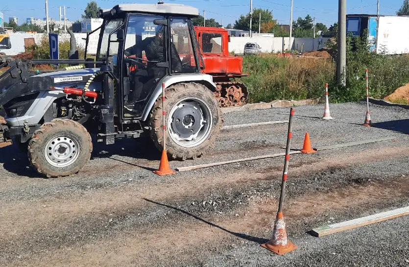
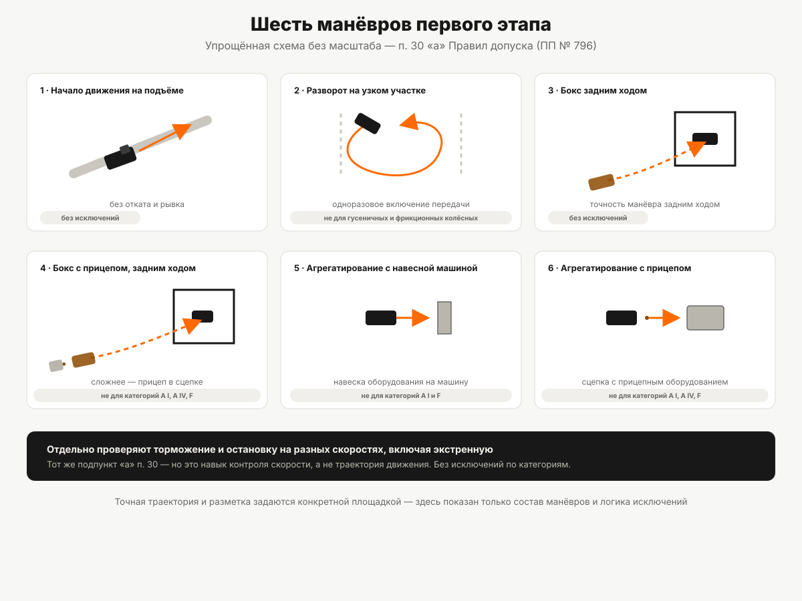

Практический экзамен на самоходной машине
Сначала площадка или трактородром, затем маршрут в реальных условиях. Перечень манёвров по Правилам допуска, порог в 75 процентов и требования к самой экзаменационной машине.
На площадке или трактородроме кандидата ждёт конкретный список манёвров — не «покажите, что умеете», а перечень, зафиксированный пунктом 30 Правил допуска к управлению самоходными машинами (постановление Правительства РФ от 12.07.1999 № 796, в редакции постановления от 17.07.2024 № 969). Практика — заключительная из трёх частей экзамена и идёт только после обеих теоретических; порядок целиком разобран в статье «Экзамен в гостехнадзоре: как он устроен». Здесь — что именно проверяют на площадке и на маршруте, и только после того, как список манёвров выполнен, кандидата допускают ко второму этапу.

Два этапа и порядок перехода между ними
Практический экзамен принимается в два этапа (пункт 23 Правил допуска):
- первый — на закрытой от движения площадке или трактородроме;
- второй — на специальном маршруте в условиях реального функционирования самоходной машины.
Переход строгий: кандидат, не сдавший практический экзамен на первом этапе, ко второму этапу не допускается (пункт 22² Правил допуска). Показать на маршруте то, что не получилось на площадке, не выйдет — сначала нужно закрыть первый этап целиком.
Манёвры первого этапа
Подпункт «а» пункта 30 перечисляет, что именно проверяют на первом этапе. Вот полный список с оговорками по категориям:
| Манёвр | Что проверяется | Исключения по категориям |
|---|---|---|
| Начало движения с места на подъёме | Способность тронуться с места без отката и рывка на уклоне | Без исключений |
| Разворот при ограниченной ширине территории при одноразовом включении передачи | Разворот в стеснённых условиях без переключения передачи в процессе манёвра | Не выполняется на гусеничных учебных машинах и колёсных учебных машинах с бортовыми фрикционами |
| Постановка самоходной машины в бокс задним ходом | Точность маневрирования задним ходом без учебной машины в сцепке | Без исключений |
| Постановка учебной машины в агрегате с прицепом в бокс задним ходом | То же самое, но с прицепом в сцепке — задача сложнее из-за управления прицепным звеном | Не выполняется для категорий A I, A IV и F |
| Агрегатирование самоходной машины с навесной машиной | Навеска оборудования на саму машину | Не выполняется для категорий A I и F |
| Агрегатирование учебной машины с прицепом (прицепным агрегатом, орудием или оборудованием) | Сцепка с прицепным, а не навесным оборудованием | Не выполняется для категорий A I, A IV и F |
Отдельно, тем же подпунктом «а», проверяется торможение и остановка на различных скоростях, включая экстренную остановку — это шестой пункт списка, но по характеру он ближе к отдельному навыку контроля скорости, чем к манёвру в привычном смысле «проехать определённую траекторию».

Логика исключений по категориям читается так: манёвры со сцепкой (постановка с прицепом в бокс, оба вида агрегатирования) не имеют смысла для категории A I (внедорожная мототехника — там нет прицепного оборудования в этом значении) и для категории F (самоходные сельскохозяйственные машины — агрегатирование у них устроено иначе). Категория A IV исключена из двух манёвров с прицепом отдельно — видимо, из-за специфики внедорожных пассажирских машин, для которых сама конструкция прицепной сцепки нетипична; прямого пояснения этой логики в тексте нормы нет, это только предположение по характеру исключённых категорий, а не установленный в норме факт.
Здесь же стоит развести два разных вопроса, которые легко перепутать: манёвры со сцепкой на экзамене показывают, что кандидат умеет работать с прицепом и навесным оборудованием в рамках уже выбранной категории — это не то же самое, что вопрос, нужна ли для работы с прицепом отдельная категория удостоверения. Он разобран отдельно, в статье «Трактор с прицепом и навесным оборудованием».
Второй этап: маршрут в реальных условиях
На втором этапе, по подпункту «б» пункта 30, проверяется не набор конкретных манёвров, а более широкая способность: соблюдение правил безопасной эксплуатации и Правил дорожного движения, умение выполнять манёвры на самоходной машине в реальных условиях, а также умение оценивать эксплуатационную ситуацию и правильно на неё реагировать. Формулировка описывает не фиксированный список действий, а комплексную оценку поведения кандидата в реальной обстановке — она принципиально отличается от первого этапа именно этим.
Порог сдачи: 75 процентов
Результат практического экзамена считается положительным, если кандидат в отведённое время правильно выполнил не менее 75 процентов общего количества приёмов и манёвров, выполненных на закрытой площадке (трактородроме), а также на специальном маршруте (пункт 22² Правил допуска). Формулировка нормы говорит об общем количестве приёмов и манёвров, не разделяя порог отдельно на первый и второй этап, — но при этом кандидата, не сдавшего первый этап, ко второму не допускают (см. выше). Это значит, что порог 75 % применяется в рамках каждого этапа как условие для допуска дальше, хотя буквальная формулировка пункта 22² звучит как расчёт по общему количеству, а не отдельно по этапам.
Тот же порог 75 % действует и на теоретическом экзамене, но считается иначе — там это доля правильных ответов на вопросы билета, а не доля правильно выполненных приёмов. Подробнее — в статье «Теория в гостехнадзоре: билеты и порог сдачи».
Требования к экзаменационной машине
Практический экзамен принимается на самоходной машине той категории, на право управления которой сдаётся экзамен (пункт 24) — то есть категория должна быть определена ещё до экзамена, на этапе выбора техники и обучения; как её определить по мощности двигателя и типу хода, разобрано в статье «Как определить категорию под свою технику». Технику предоставляют, как правило, организации, осуществляющие образовательную деятельность, а также другие заинтересованные организации или граждане (пункт 25). К самой машине Правила допуска предъявляют отдельные требования (пункт 26):
- опознавательный знак «учебное транспортное средство»;
- зеркало заднего вида для экзаменатора;
- регистрация в органах гостехнадзора;
- действующее на день экзамена свидетельство о прохождении технического осмотра;
- для второго этапа — средства аудио- и видеорегистрации.
Последнее требование (аудио- и видеофиксация второго этапа) появилось в Правилах допуска сравнительно недавно — оно введено постановлением Правительства РФ от 21.05.2022 № 932. Это прямое указание нормы, а не практика конкретной экзаменационной комиссии.
Если не сдали
Правила допуска отдельно регулируют, что происходит, если первый или второй этап практики не сдан с первой попытки, — включая интервал до повторной попытки и то, что грозит после трёх подряд несданных практик. Это отдельная тема, разобрана в статье «Что делать, если не сдал экзамен».